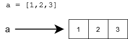
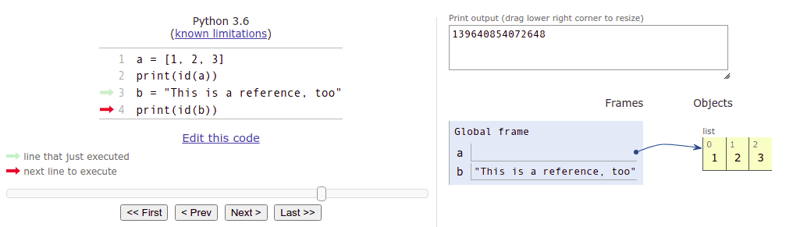
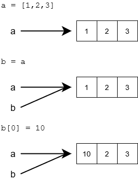
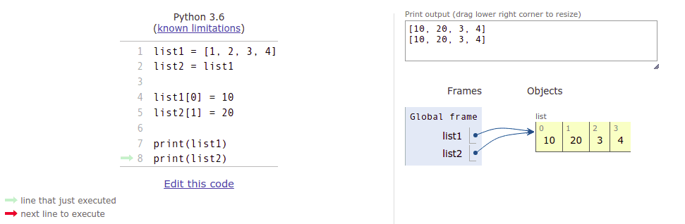
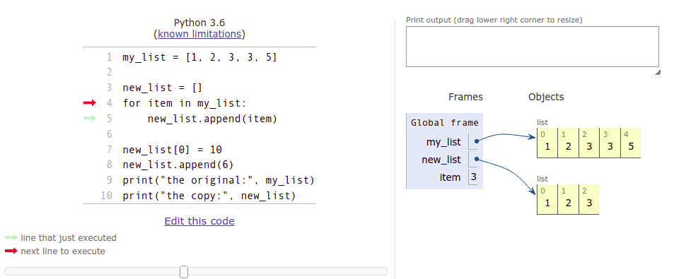
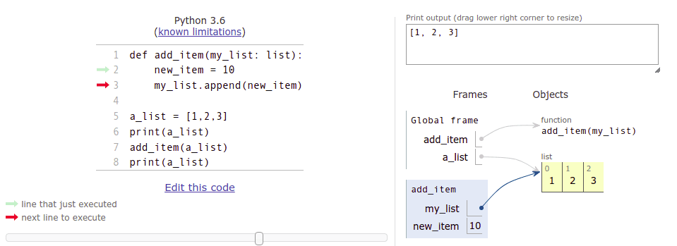
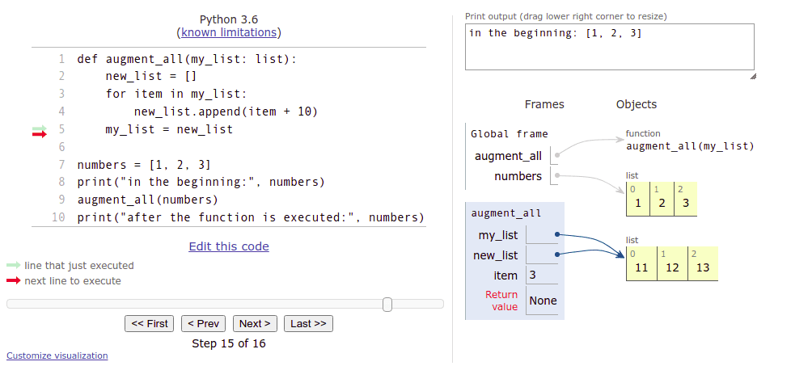

Referències
Objectius d'aprenentatge
- Saber què significa una referència a una variable
- Entendre que pot haver-hi múltiples referències al mateix objecte
- Ser capaç d'utilitzar llistes com a paràmetres en funcions
- Saber què significa l'efecte secundari d'una funció
Referències i llistes
Fins ara hem pensat en una variable com una mena de "caixa" que conté el valor de la variable. Tècnicament, això no és cert en Python. El que s'emmagatzema en una variable no és el valor en si, sinó una referència a l'objecte que és el valor real de la variable. L'objecte pot ser, per exemple, un número, una cadena de text o una llista.
En la pràctica, això significa que el valor de la variable no s'emmagatzema en la variable mateixa. En canvi, hi ha informació sobre la ubicació a la memòria de l'ordinador on es pot trobar el valor.
Una referència sovint es representa per una fletxa des de la variable fins al valor real a la memòria:

Així doncs, una referència ens indica on es pot trobar el valor. La funció id es pot utilitzar per esbrinar la ubicació exacta a la qual apunta la variable:
llista = [1, 2, 3]
print(id(llista))
b = "Això també és una referència"
print(id(b))4538357072 4537788912
La referència, o l'ID de la variable, és un enter, que es pot considerar com l'adreça a la memòria de l'ordinador on s'emmagatzema el valor de la variable. Si executeu el codi anterior al vostre ordinador, el resultat probablement serà diferent, ja que les vostres variables apuntaran a ubicacions diferents - les referències seran diferents.
L'eina de visualització Python Tutor també mostra les referències com a fletxes des de la variable fins al contingut real, com vam veure a la secció anterior. L'eina "enganya" una mica quan es tracta de cadenes de text, però. Mostra les cadenes com si s'emmagatzemessin a les variables mateixes:

En realitat, les cadenes de text de Python es gestionen de manera molt similar a les llistes, amb referències a ubicacions de memòria.
Objectes mutables i immutables
Molts dels tipus incorporats a Python, com ara str, són immutables. Això significa que el valor de l'objecte, o qualsevol part d'ell, no pot canviar. El valor es pot substituir per un valor nou:

Alguns tipus de Python són mutables. Per exemple, el contingut d'una llista pot canviar sense necessitat de crear una llista completament nova:

Potser us sorprendrà que els tipus bàsics de dades int, float i bool també són immutables en Python. Vegem el següent fragment de codi:
numero = 1
numero = 2
numero += 10Sembla que les ordres anteriors simplement canvien el valor emmagatzemat a la variable, però en realitat cada ordre crea un número completament nou a la memòria de l'ordinador.
La sortida del següent programa il·lumina la situació:
numero = 1
print(id(numero))
numero += 10
print(id(numero))
a = 1
print(id(a))4535856912 4535856944 4535856912
Al principi, la variable numero apunta a la ubicació de memòria 4535856912. Quan s'assigna un nou valor a numero, apunta a la ubicació 4535856944. Ara, quan la variable a s'assigna el valor 1, a apunta a exactament la mateixa ubicació on apuntava numero quan també se li va assignar el valor 1.
Sembla que Python ha emmagatzemat el valor 1 a la ubicació de memòria 4535856912. Sempre que una variable s'assigna el valor 1, es refereix a aquesta ubicació a la memòria de l'ordinador.
És bo tenir present que gairebé tot són referències en Python, però tot això rarament és rellevant per a les tasques de programació diàries. Així que tornem a assumptes més pràctics.
Múltiples referències a la mateixa llista
Què passa realment quan assignes una variable de llista a una nova variable: es copia la llista?
a = [1, 2, 3]
b = a
b[0] = 10L'assignació b = a copia el valor emmagatzemat a la variable a a la variable b. No obstant això, el valor emmagatzemat a a no és la llista en si, sinó una referència a la llista.
Així doncs, l'assignació b = a copia la referència. Com a resultat, ara hi ha dues referències a la mateixa ubicació de memòria que conté la llista.

Es pot accedir a la llista a través de qualsevol de les dues referències:
llista1 = [1, 2, 3, 4]
llista2 = llista1
llista1[0] = 10
llista2[1] = 20
print(llista1)
print(llista2)[10, 20, 3, 4] [10, 20, 3, 4]
Si hi ha més d'una referència a la mateixa llista, es pot utilitzar qualsevol de les referències per accedir-hi. D'altra banda, un canvi fet a través de qualsevol de les referències també afecta les altres referències, ja que el seu objectiu és el mateix.
L'eina de visualització és novament molt útil per esbrinar què està passant:

Copiar una llista
Si voleu crear una còpia separada real d'una llista, podeu crear una llista nova i afegir cada element de la llista original al seu torn:
llista_original = [1, 2, 3, 3, 5]
nova_llista = []
for element in llista_original:
nova_llista.append(element)
nova_llista[0] = 10
nova_llista.append(6)
print("l'original:", llista_original)
print("la còpia:", nova_llista)l'original: [1, 2, 3, 3, 5] la còpia: [10, 2, 3, 3, 5, 6]
Una instantània del procés de còpia a l'eina de visualització:

La variable nova_llista apunta a una llista diferent de la variable llista_original.
Una manera més fàcil de copiar una llista és l'operador de claudàtors [], que vam utilitzar per a retalls anteriorment. La notació [:] selecciona tots els elements de la col·lecció. Com a efecte secundari, crea una còpia de la llista:
llista_original = [1,2,3,4]
nova_llista = llista_original[:]
llista_original[0] = 10
nova_llista[1] = 20
print(llista_original)
print(nova_llista)[10, 2, 3, 4] [1, 20, 3, 4]
Utilitzar llistes com a paràmetres en funcions
Quan passes una llista com a argument a una funció, estàs passant una referència a aquesta llista. Això significa que la funció pot modificar la llista directament.
La següent funció pren una llista com a argument i afegeix un element nou al final de la llista:
def afegeix_element(llista: list):
nou_element = 10
llista.append(nou_element)
una_llista = [1,2,3]
print(una_llista)
afegeix_element(una_llista)
print(una_llista)[1, 2, 3] [1, 2, 3, 10]
Fixeu-vos que la funció afegeix_element no té valor de retorn. Només canvia la llista que pren com a argument.
L'eina de visualització pot ajudar-vos a entendre què està passant aquí:

El marc global es refereix a les variables definides a la funció principal, mentre que el marc afegeix_element amb fons blau representa els paràmetres i les variables dins d'aquesta funció. Com podeu veure a la visualització, la funció afegeix_element es refereix exactament a la mateixa llista que la funció principal. Els canvis fets dins de la funció afegeix_element també afecten la funció principal.
Una altra manera d'implementar aquesta funcionalitat seria crear una llista nova dins de la funció i retornar-la:
def afegeix_element(llista: list) -> list:
nou_element = 10
copia_llista = llista[:]
copia_llista.append(nou_element)
return copia_llista
numeros = [1, 2, 3]
numeros2 = afegeix_element(numeros)
print("llista original:", numeros)
print("nova llista:", numeros2)llista original: [1, 2, 3] nova llista: [1, 2, 3, 10]
Si no esteu absolutament segurs d'entendre què està passant al codi anterior, si us plau, reviseu-ho a l'eina de visualització.
Editar una llista donada com a argument
El següent és un intent de funció que hauria d'augmentar cada element d'una llista en deu:
def augmenta_tot(llista: list):
nova_llista = []
for element in llista:
nova_llista.append(element + 10)
llista = nova_llista
numeros = [1, 2, 3]
print("al principi:", numeros)
augmenta_tot(numeros)
print("després d'executar la funció:", numeros)al principi: [1, 2, 3] després d'executar la funció: [1, 2, 3]
Per alguna raó la funció no funciona, així que què està passant?
La funció pren una referència a una llista com a argument. Això s'emmagatzema a la variable llista. L'assignació llista = nova_llista assigna un valor nou a aquesta mateixa variable. La variable llista ara apunta a la nova llista creada dins de la funció, i la referència a la llista original ja no està disponible dins de la funció. No obstant això, aquesta assignació no té efecte fora de la funció.
A més, la variable nova_llista, que conté els valors nous augmentats, no és accessible des de fora de la funció. Es "perd" quan s'acaba l'execució de la funció i el focus torna a la funció principal. La variable numeros a la funció principal sempre apunta a la llista original.
L'eina de visualització és la teva amiga aquí també. Si us plau, passeu pels estadis amb cura i vegeu com la llista original no es veu afectada per l'execució de la funció en absolut:

Una manera de solucionar això és copiar tots els elements de la nova llista a la llista antiga, un per un:
def augmenta_tot(llista: list):
nova_llista = []
for element in llista:
nova_llista.append(element + 10)
# copia elements de la nova llista a la llista antiga
for i in range(len(llista)):
llista[i] = nova_llista[i]Python també té una forma abreujada per assignar múltiples elements en una col·lecció alhora:
>>> llista = [1, 2, 3, 4]
>>> llista[1:3] = [10, 20]
>>> llista
[1, 10, 20, 4]A l'exemple anterior, s'assignen valors d'una altra col·lecció a un retall de la llista.
Com sabem, un retall pot incloure tota la col·lecció:
>>> llista = [1, 2, 3, 4]
>>> llista[:] = [100, 99, 98, 97]
>>> llista
[100, 99, 98, 97]Es reemplacen tots els continguts de la llista antiga. Inspirat en això, una versió funcional de la funció d'augmentar podria tenir aquest aspecte:
def augmenta_tot(llista: list):
nova_llista = []
for element in llista:
nova_llista.append(element + 10)
llista[:] = nova_llistaEn realitat, no cal crear una llista nova dins de la funció en absolut. Podem assignar directament els nous valors a la llista original:
def augmenta_tot(llista: list):
for i in range(len(llista)):
llista[i] += 10Exercici 1: Elements multiplicats per dos
Escriviu una funció anomenada duplica_elements(numeros: list), que pren una llista d'enters com a argument.
La funció ha de retornar una llista nova, que contingui tots els valors de la llista original duplicats. La funció no ha de canviar la llista original.
Un exemple de la funció en funcionament:
numeros = [2, 4, 5, 3, 11, -4]
numeros_duplicats = duplica_elements(numeros)
print("original:", numeros)
print("duplicats:", numeros_duplicats)original: [2, 4, 5, 3, 11, -4] duplicats: [4, 8, 10, 6, 22, -8]
Exercici 2: Elimina el més petit
Escriviu una funció anomenada elimina_menor(numeros: list), que pren una llista d'enters com a argument.
La funció ha de trobar i eliminar l'element més petit de la llista. Podeu assumir que hi ha un únic element més petit a la llista.
La funció no ha de tenir valor de retorn - ha de modificar directament la llista que rep com a paràmetre.
Un exemple de com funciona la funció:
numeros = [2, 4, 6, 1, 3, 5]
elimina_menor(numeros)
print(numeros)[2, 4, 6, 3, 5]
Exercici 3: Sudoku: imprimeix el tauler i afegeix un número
En aquest exercici completarem dues funcions més per al projecte sudoku de la secció anterior: imprimeix_sudoku i afegeix_numero.
La funció imprimeix_sudoku(sudoku: list) pren una matriu bidimensional que representa una graella de sudoku com a argument. La funció ha d'imprimir la graella amb el format especificat als exemples següents.
La funció afegeix_numero(sudoku: list, num_fila: int, num_columna: int, numero: int) pren una matriu bidimensional que representa una graella de sudoku, dos enters que es refereixen als índexs de fila i columna d'una única casella, i un únic dígit entre 1 i 9, com a arguments. La funció ha d'afegir el dígit a la ubicació especificada a la graella.
sudoku = [
[0, 0, 0, 0, 0, 0, 0, 0, 0],
[0, 0, 0, 0, 0, 0, 0, 0, 0],
[0, 0, 0, 0, 0, 0, 0, 0, 0],
[0, 0, 0, 0, 0, 0, 0, 0, 0],
[0, 0, 0, 0, 0, 0, 0, 0, 0],
[0, 0, 0, 0, 0, 0, 0, 0, 0],
[0, 0, 0, 0, 0, 0, 0, 0, 0],
[0, 0, 0, 0, 0, 0, 0, 0, 0],
[0, 0, 0, 0, 0, 0, 0, 0, 0]
]
imprimeix_sudoku(sudoku)
afegeix_numero(sudoku, 0, 0, 2)
afegeix_numero(sudoku, 1, 2, 7)
afegeix_numero(sudoku, 5, 7, 3)
print()
print("S'han afegit tres números:")
print()
imprimeix_sudoku(sudoku)_ _ _ _ _ _ _ _ _ _ _ _ _ _ _ _ _ _ _ _ _ _ _ _ _ _ _ _ _ _ _ _ _ _ _ _ _ _ _ _ _ _ _ _ _ _ _ _ _ _ _ _ _ _ _ _ _ _ _ _ _ _ _ _ _ _ _ _ _ _ _ _ _ _ _ _ _ _ _ _ _ S'han afegit tres números: 2 _ _ _ _ _ _ _ _ _ _ 7 _ _ _ _ _ _ _ _ _ _ _ _ _ _ _ _ _ _ _ _ _ _ _ _ _ _ _ _ _ _ _ _ _ _ _ _ _ _ _ _ 3 _ _ _ _ _ _ _ _ _ _ _ _ _ _ _ _ _ _ _ _ _ _ _ _ _ _ _ _
Pista
Recordeu que és possible cridar la funció print sense causar un canvi de línia:
print("caràcters ", end="")
print("sense retorns de carro", end="")caràcters sense retorns de carro
A vegades només necessiteu una línia nova, que una sentència print sense cap argument aconseguirà:
print()Exercici 4: Sudoku: afegeix número a una còpia de la graella
Aquesta és l'última tasca de sudoku. Aquesta vegada crearem una versió lleugerament diferent de la funció per afegir nous números a la graella.
La funció copia_i_afegeix(sudoku: list, num_fila: int, num_columna: int, numero: int) pren una matriu bidimensional que representa una graella de sudoku, dos enters que es refereixen als índexs de fila i columna d'una única casella, i un únic dígit entre 1 i 9, com a arguments. La funció ha de retornar una còpia de la graella original amb el nou dígit afegit a la ubicació correcta. La funció no ha de canviar la graella original rebuda com a paràmetre.
La funció imprimeix_sudoku de l'exercici anterior podria ser útil per fer proves, i s'utilitza a l'exemple següent:
sudoku = [
[0, 0, 0, 0, 0, 0, 0, 0, 0],
[0, 0, 0, 0, 0, 0, 0, 0, 0],
[0, 0, 0, 0, 0, 0, 0, 0, 0],
[0, 0, 0, 0, 0, 0, 0, 0, 0],
[0, 0, 0, 0, 0, 0, 0, 0, 0],
[0, 0, 0, 0, 0, 0, 0, 0, 0],
[0, 0, 0, 0, 0, 0, 0, 0, 0],
[0, 0, 0, 0, 0, 0, 0, 0, 0],
[0, 0, 0, 0, 0, 0, 0, 0, 0]
]
copia_graella = copia_i_afegeix(sudoku, 0, 0, 2)
print("Original:")
imprimeix_sudoku(sudoku)
print()
print("Còpia:")
imprimeix_sudoku(copia_graella)Original: _ _ _ _ _ _ _ _ _ _ _ _ _ _ _ _ _ _ _ _ _ _ _ _ _ _ _ _ _ _ _ _ _ _ _ _ _ _ _ _ _ _ _ _ _ _ _ _ _ _ _ _ _ _ _ _ _ _ _ _ _ _ _ _ _ _ _ _ _ _ _ _ _ _ _ _ _ _ _ _ _ Còpia: 2 _ _ _ _ _ _ _ _ _ _ _ _ _ _ _ _ _ _ _ _ _ _ _ _ _ _ _ _ _ _ _ _ _ _ _ _ _ _ _ _ _ _ _ _ _ _ _ _ _ _ _ _ _ _ _ _ _ _ _ _ _ _ _ _ _ _ _ _ _ _ _ _ _ _ _ _ _ _ _ _
Pista Quan es treballa amb llistes niades cal anar amb molt de compte en fer còpies. Què cal copiar explícitament i on tenen efecte realment els canvis? L'eina de visualització és d'una gran ajuda aquí també, tot i que la mida de la graella de sudoku farà que la vista sigui menys ordenada del normal.
Exercici 5: Tres en ratlla
El tres en ratlla es juga en una graella de 3 per 3, per dos jugadors que van alternant entrant cercles i creus. Si qualsevol jugador aconsegueix col·locar tres dels seus símbols en qualsevol fila, columna o diagonal, guanya. Si cap jugador ho aconsegueix, és un empat.
Escriviu una funció anomenada juga_torn(tauler_joc: list, x: int, y: int, fitxa: str), que col·loca el símbol donat a les coordenades donades al tauler. Els valors de les coordenades al tauler estan entre 0 i 2.
Nota: en comparació amb els exercicis de sudoku, els arguments que pren la funció són a l'inrevés aquí. La columna x ve primer, i la fila y segon.
El tauler consisteix en les cadenes següents:
"": casella buida"X": símbol del jugador 1"O": símbol del jugador 2
La funció ha de retornar True si la casella estava buida i el símbol s'ha col·locat amb èxit al tauler de joc. La funció ha de retornar False si la casella estava ocupada, o si les coordenades no eren vàlides.
Una execució exemple de la funció:
tauler_joc = [["", "", ""], ["", "", ""], ["", "", ""]]
print(juga_torn(tauler_joc, 2, 0, "X"))
print(tauler_joc)True [['', '', 'X'], ['', '', ''], ['', '', '']]
Exercici 6: Transposa una matriu
Escriviu una funció anomenada transposa(matriu: list), que pren una matriu d'enters bidimensional, és a dir, una matriu, com a argument. La funció ha de transposar la matriu. Transposar significa bàsicament girar la matriu sobre la seva diagonal: les columnes es converteixen en files i les files es converteixen en columnes.
Podeu assumir que la matriu és una matriu quadrada, de manera que tindrà un nombre igual de files i columnes.
La següent matriu
1 2 3 4 5 6 7 8 9
transposada té aquest aspecte:
1 4 7 2 5 8 3 6 9
La funció no ha de tenir valor de retorn. La matriu s'ha de modificar directament a través de la referència.
Efectes secundaris de les funcions
Si una funció pren una referència a una llista com a argument, podrà modificar aquesta llista. Si no es pretenien modificacions directes, modificar accidentalment la llista rebuda com a paràmetre podria causar problemes a altres parts del programa.
Vegem una funció que se suposa que ha de trobar el segon element més petit d'una llista:
def segon_menor(llista: list) -> int:
# en una llista ordenada, el segon element més petit està a l'índex 1
llista.sort()
return llista[1]
numeros = [1, 4, 2, 5, 3, 6, 4, 7]
print(segon_menor(numeros))
print(numeros)2 [1, 2, 3, 4, 4, 5, 6, 7]
La funció troba el segon element més petit de manera fiable, però a més ordena la llista in situ, canviant l'ordre dels elements. Si l'ordre és significatiu en altres parts del programa, cridar la funció podria causar errors. Les modificacions no intencionades a un objecte accedit a través d'una referència s'anomenen efecte secundari d'una funció.
Podem evitar l'efecte secundari fent un petit canvi a la funció:
def segon_menor(llista: list) -> int:
copia_llista = sorted(llista)
return copia_llista[1]
numeros = [1, 4, 2, 5, 3, 6, 4, 7]
print(segon_menor(numeros))
print(numeros)2 [1, 4, 2, 5, 3, 6, 4, 7]
La funció sorted retorna una còpia nova i ordenada de la llista, de manera que buscar el segon element més petit ja no embolica l'ordre de la llista original.
Generalment es considera una bona pràctica de programació evitar causar efectes secundaris amb les funcions. Els efectes secundaris poden fer més difícil verificar que el programa funcioni com s'espera en totes les situacions.
Les funcions lliures d'efectes secundaris també s'anomenen funcions pures. Especialment en adherir-se a un estil de programació funcional, aquest és un ideal comú a seguir. Explorarem aquest tema més a fons al Curs Avançat de Programació, que és el curs que segueix aquest.
Conceptes clau
- Referència: apuntador a la ubicació de memòria on s'emmagatzema l'objecte real
- Mutable: objecte que pot canviar el seu valor sense crear un nou objecte
- Immutable: objecte que no pot canviar el seu valor, només es pot substituir per un de nou
- Alias: múltiples variables que apunten al mateix objecte a la memòria
- Còpia superficial: crear un nou objecte amb els mateixos valors mitjançant
[:]olist() - Efecte secundari: modificació no intencionada d'un objecte passat com a paràmetre
- Funció pura: funció sense efectes secundaris que no modifica els seus arguments